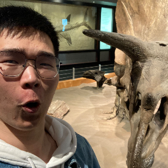
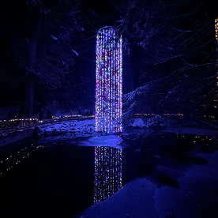

These are some interesting & meaningful moments in my life!
Step into the prehistoric wonderland of Royal Tyrrell Museum, where time rewinds millions of years, and the giants of the past come alive in vivid detail. To be honest, this is the best Dinosaur museum I have ever seen before.You know, who doesn't like dinosaurs when they are young! Stepping through the grand doors, I was transported back to an era when mighty dinosaurs roamed the Earth, their presence palpable in every meticulously curated exhibit. Every artifact tells a story of Earth's evolution, showing of all ages with its wonder and intrigue. But the Dinosaur Museum is more than just a repository of fossils; it's a gateway to adventure. There are all kinds of fossils, and most of them are still intact. Even if only the skeletons are left, I can still see the vivid scenes of their past. The Royal Tyrrell Museum is not just a destination; it's a journey through time, an unforgettable experience that leaves me in awe of the majesty of the natural world.
This photo was taken at Capilano Suspension Bridge Park in Vancouver. I visited during the evenings around Christmas time, which allowed me to witness the breathtaking night light display. Each bridge was adorned with a unique and vibrant array of colors, creating a mesmerizing spectacle. Walking amidst this enchanting scene felt like stepping into another world altogether. The illuminated bridges cast a magical glow, enhancing the natural beauty of the surrounding forest and creating an unforgettable experience. P.S.I was bitten on the hand by a Canadian goose and "robbed" by a seagull on separate occasions in Vancouver.